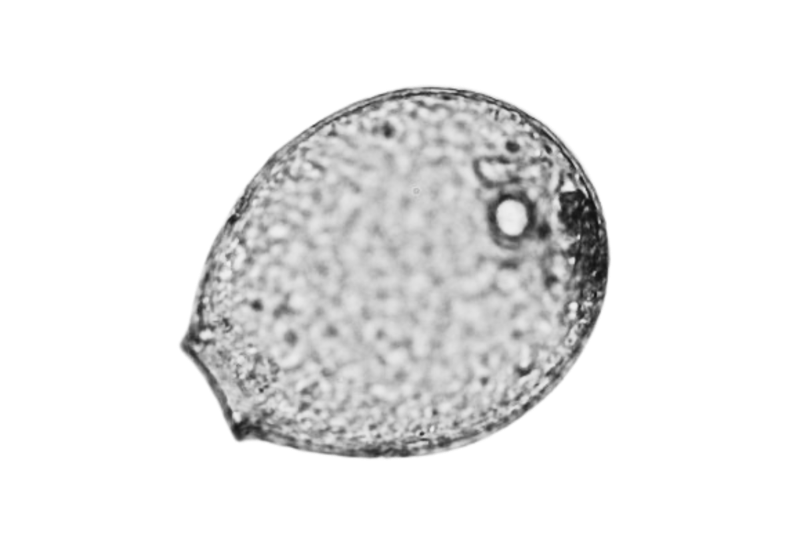
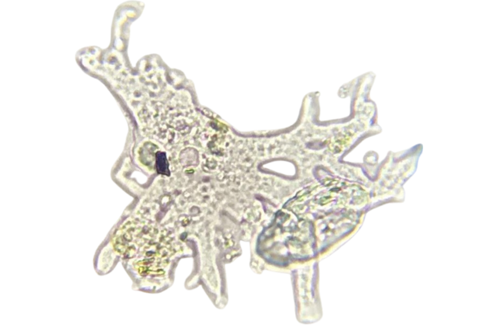
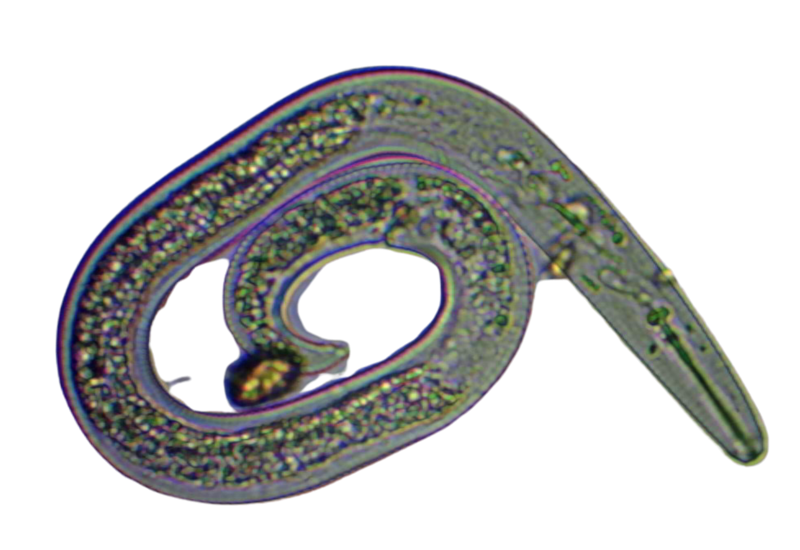
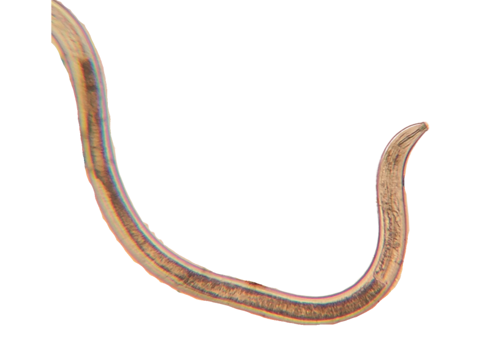

Favourite microbe
interface
interface

Wes Sander
Testate amoeba
Big, easy to spot, and you can see what it has eaten inside it.

Carla Portugal
Amoebae
For the diversity in the round. Had to find a new one after someone claimed hers.

Ayşen Ustunay
Flagellates
Loves seeing them as babies, running around. The first organisms to start the web.

Brian Daubenspeck
The underdogs
The small ones. Partly because a lot of them also live in humans.

Casey Williams
Rotifers
Remembered late, and posted it in the chat after his turn.